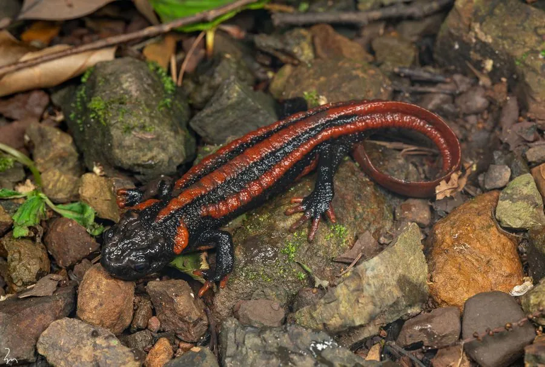

两栖动物 · 动物界
贵州疣螈 Tylototriton kweichowensis

中国贵州、云南交界山区的疣螈，通体黑褐色，背部和头部有橙红色疣粒，繁殖期在水塘中产卵，属国家二级保护动物。
- 分类
- 门脊索动物门纲两栖纲目有尾目科蝾螈科属疣螈属
- 栖息环境
- 海拔 1500–2400 米的山地溪流、水塘和潮湿林地
- 地理分布
- 中国贵州西部和云南东北部
- 保护级别
- IUCN 易危（VU）；中国国家二级保护动物
物种志
贵州疣螈体长 12–16 厘米，身体粗壮，皮肤粗糙，背面呈黑褐色或黑色，头部两侧、背脊和体侧排列着橙红色或黄褐色的疣粒，形成醒目的斑纹；腹部黑褐色，四肢短粗，尾侧扁。
它分布于中国贵州西部和云南东北部的山地，栖息于海拔 1500–2400 米的溪流、水塘、沼泽和潮湿林地，白天藏在石缝、落叶和土洞中，夜间捕食昆虫、蠕虫、蛞蝓和小型节肢动物。繁殖期在 5–7 月，雌螈在水草间产卵，卵单粒或成小群附着，幼虫有外鳃。贵州疣螈的皮肤能分泌刺激性毒素，遇到威胁时会弓起身体展示橙红色疣粒；由于栖息地破坏和非法捕捉，种群数量下降，中国将其列为国家二级保护动物。
形态与习性
- 食性昆虫、蠕虫、蛞蝓和小型节肢动物
- 体长约 12–16 cm
- 繁殖5–7 月在水草间产卵，幼虫有外鳃
- 活动节律夜行性，白天藏在石缝和落叶中
- 毒性皮肤分泌刺激性毒素，接触后需洗手
- 保护中国国家二级保护动物
趣味知识
- 贵州疣螈黑褐色的身体上点缀着橙红色疣粒，颜色十分醒目。
- 受到威胁时它会弓起身体，把鲜艳的疣粒展示给天敌看。
- 它仅分布于贵州、云南交界的山区，是中国特有物种。